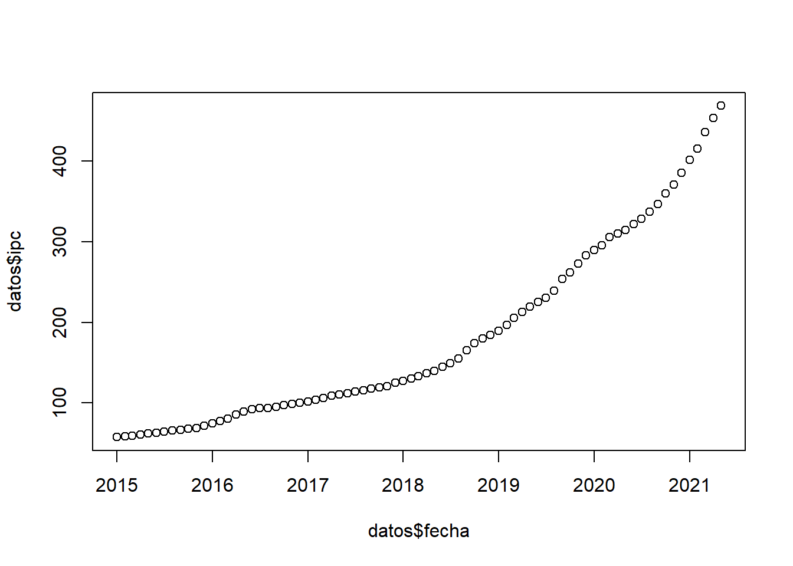
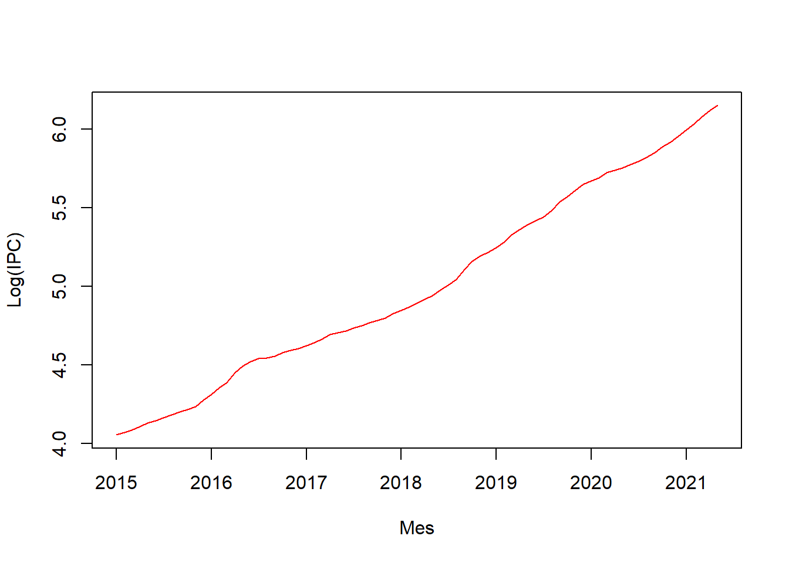
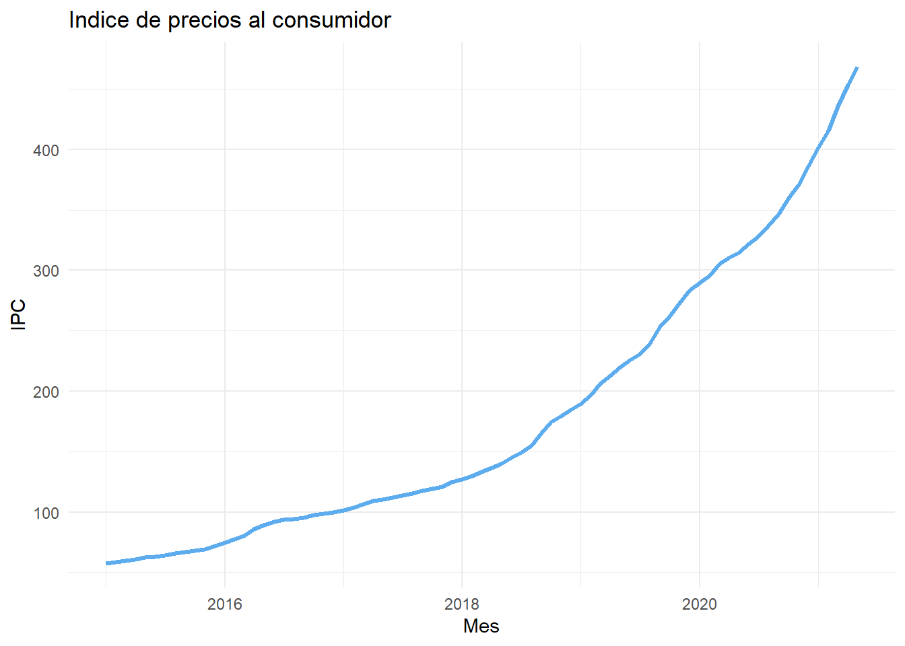
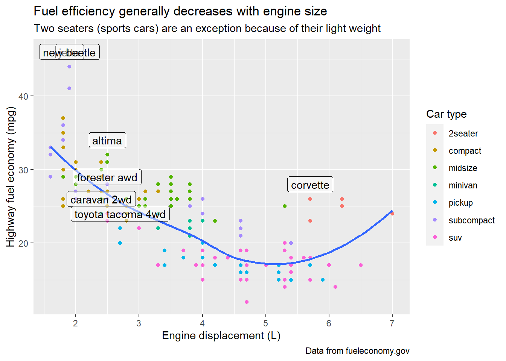

<!DOCTYPE html>
<html lang="es" xml:lang="es">
<head>

  <meta charset="utf-8" />
  <meta http-equiv="X-UA-Compatible" content="IE=edge" />
  <title>Capítulo 2 Base de datos | Politica Economica II</title>
  <meta name="description" content="UNLP" />
  <meta name="generator" content="bookdown 0.26 and GitBook 2.6.7" />

  <meta property="og:title" content="Capítulo 2 Base de datos | Politica Economica II" />
  <meta property="og:type" content="book" />
  
  <meta property="og:description" content="UNLP" />
  <meta name="github-repo" content="msangia/msangia.github" />

  <meta name="twitter:card" content="summary" />
  <meta name="twitter:title" content="Capítulo 2 Base de datos | Politica Economica II" />
  <meta name="twitter:site" content="@msangia" />
  <meta name="twitter:description" content="UNLP" />
  

<meta name="author" content="Máximo Sangiácomo" />


  <meta name="viewport" content="width=device-width, initial-scale=1" />
  <meta name="apple-mobile-web-app-capable" content="yes" />
  <meta name="apple-mobile-web-app-status-bar-style" content="black" />
  
  
<link rel="prev" href="intro.html"/>
<link rel="next" href="conceptos.html"/>
<script src="libs/jquery-3.6.0/jquery-3.6.0.min.js"></script>
<script src="https://cdn.jsdelivr.net/npm/fuse.js@6.4.6/dist/fuse.min.js"></script>
<link href="libs/gitbook-2.6.7/css/style.css" rel="stylesheet" />
<link href="libs/gitbook-2.6.7/css/plugin-table.css" rel="stylesheet" />
<link href="libs/gitbook-2.6.7/css/plugin-bookdown.css" rel="stylesheet" />
<link href="libs/gitbook-2.6.7/css/plugin-highlight.css" rel="stylesheet" />
<link href="libs/gitbook-2.6.7/css/plugin-search.css" rel="stylesheet" />
<link href="libs/gitbook-2.6.7/css/plugin-fontsettings.css" rel="stylesheet" />
<link href="libs/gitbook-2.6.7/css/plugin-clipboard.css" rel="stylesheet" />


<link href="libs/anchor-sections-1.1.0/anchor-sections.css" rel="stylesheet" />
<link href="libs/anchor-sections-1.1.0/anchor-sections-hash.css" rel="stylesheet" />
<script src="libs/anchor-sections-1.1.0/anchor-sections.js"></script>
<html>
  <head>
	<link rel="shortcut icon" href="images/favicon.png" />
  </head>
  <body>
  </body>
</html>


<style type="text/css">
pre > code.sourceCode { white-space: pre; position: relative; }
pre > code.sourceCode > span { display: inline-block; line-height: 1.25; }
pre > code.sourceCode > span:empty { height: 1.2em; }
.sourceCode { overflow: visible; }
code.sourceCode > span { color: inherit; text-decoration: inherit; }
pre.sourceCode { margin: 0; }
@media screen {
div.sourceCode { overflow: auto; }
}
@media print {
pre > code.sourceCode { white-space: pre-wrap; }
pre > code.sourceCode > span { text-indent: -5em; padding-left: 5em; }
}
pre.numberSource code
  { counter-reset: source-line 0; }
pre.numberSource code > span
  { position: relative; left: -4em; counter-increment: source-line; }
pre.numberSource code > span > a:first-child::before
  { content: counter(source-line);
    position: relative; left: -1em; text-align: right; vertical-align: baseline;
    border: none; display: inline-block;
    -webkit-touch-callout: none; -webkit-user-select: none;
    -khtml-user-select: none; -moz-user-select: none;
    -ms-user-select: none; user-select: none;
    padding: 0 4px; width: 4em;
    color: #aaaaaa;
  }
pre.numberSource { margin-left: 3em; border-left: 1px solid #aaaaaa;  padding-left: 4px; }
div.sourceCode
  {   }
@media screen {
pre > code.sourceCode > span > a:first-child::before { text-decoration: underline; }
}
code span.al { color: #ff0000; font-weight: bold; } /* Alert */
code span.an { color: #60a0b0; font-weight: bold; font-style: italic; } /* Annotation */
code span.at { color: #7d9029; } /* Attribute */
code span.bn { color: #40a070; } /* BaseN */
code span.bu { } /* BuiltIn */
code span.cf { color: #007020; font-weight: bold; } /* ControlFlow */
code span.ch { color: #4070a0; } /* Char */
code span.cn { color: #880000; } /* Constant */
code span.co { color: #60a0b0; font-style: italic; } /* Comment */
code span.cv { color: #60a0b0; font-weight: bold; font-style: italic; } /* CommentVar */
code span.do { color: #ba2121; font-style: italic; } /* Documentation */
code span.dt { color: #902000; } /* DataType */
code span.dv { color: #40a070; } /* DecVal */
code span.er { color: #ff0000; font-weight: bold; } /* Error */
code span.ex { } /* Extension */
code span.fl { color: #40a070; } /* Float */
code span.fu { color: #06287e; } /* Function */
code span.im { } /* Import */
code span.in { color: #60a0b0; font-weight: bold; font-style: italic; } /* Information */
code span.kw { color: #007020; font-weight: bold; } /* Keyword */
code span.op { color: #666666; } /* Operator */
code span.ot { color: #007020; } /* Other */
code span.pp { color: #bc7a00; } /* Preprocessor */
code span.sc { color: #4070a0; } /* SpecialChar */
code span.ss { color: #bb6688; } /* SpecialString */
code span.st { color: #4070a0; } /* String */
code span.va { color: #19177c; } /* Variable */
code span.vs { color: #4070a0; } /* VerbatimString */
code span.wa { color: #60a0b0; font-weight: bold; font-style: italic; } /* Warning */
</style>

<style type="text/css">
/* Used with Pandoc 2.11+ new --citeproc when CSL is used */
div.csl-bib-body { }
div.csl-entry {
  clear: both;
}
.hanging div.csl-entry {
  margin-left:2em;
  text-indent:-2em;
}
div.csl-left-margin {
  min-width:2em;
  float:left;
}
div.csl-right-inline {
  margin-left:2em;
  padding-left:1em;
}
div.csl-indent {
  margin-left: 2em;
}
</style>

<link rel="stylesheet" href="css/style.css" type="text/css" />
<link rel="stylesheet" href="css/r4ds.css" type="text/css" />
</head>

<body>


  <div class="book without-animation with-summary font-size-2 font-family-1" data-basepath=".">

    <div class="book-summary">
      <nav role="navigation">

<ul class="summary">
<li><a href="./">Politica Economica II - UNLP</a></li>

<li class="divider"></li>
<li class="chapter" data-level="" data-path="index.html"><a href="index.html"><i class="fa fa-check"></i>Descripcion del curso</a></li>
<li class="chapter" data-level="1" data-path="intro.html"><a href="intro.html"><i class="fa fa-check"></i><b>1</b> Introduccion a R</a>
<ul>
<li class="chapter" data-level="1.1" data-path="intro.html"><a href="intro.html#primeros-pasos"><i class="fa fa-check"></i><b>1.1</b> Primeros pasos</a></li>
<li class="chapter" data-level="1.2" data-path="intro.html"><a href="intro.html#busacar-ayuda"><i class="fa fa-check"></i><b>1.2</b> Busacar ayuda</a></li>
<li class="chapter" data-level="1.3" data-path="intro.html"><a href="intro.html#tipos-de-datos"><i class="fa fa-check"></i><b>1.3</b> Tipos de datos</a></li>
<li class="chapter" data-level="1.4" data-path="intro.html"><a href="intro.html#limpieza-de-memoria"><i class="fa fa-check"></i><b>1.4</b> Limpieza de memoria</a></li>
<li class="chapter" data-level="1.5" data-path="intro.html"><a href="intro.html#asignación-de-valores"><i class="fa fa-check"></i><b>1.5</b> Asignación de valores</a></li>
<li class="chapter" data-level="1.6" data-path="intro.html"><a href="intro.html#operadores-aritméticos"><i class="fa fa-check"></i><b>1.6</b> Operadores aritméticos</a></li>
<li class="chapter" data-level="1.7" data-path="intro.html"><a href="intro.html#operadores-relacionales"><i class="fa fa-check"></i><b>1.7</b> Operadores relacionales</a></li>
<li class="chapter" data-level="1.8" data-path="intro.html"><a href="intro.html#operadores-lógicos"><i class="fa fa-check"></i><b>1.8</b> Operadores lógicos</a></li>
</ul></li>
<li class="chapter" data-level="2" data-path="bd.html"><a href="bd.html"><i class="fa fa-check"></i><b>2</b> Base de datos</a>
<ul>
<li class="chapter" data-level="2.1" data-path="bd.html"><a href="bd.html#directorio-de-trabajo"><i class="fa fa-check"></i><b>2.1</b> Directorio de trabajo</a></li>
<li class="chapter" data-level="2.2" data-path="bd.html"><a href="bd.html#cargar-datos"><i class="fa fa-check"></i><b>2.2</b> Cargar datos</a>
<ul>
<li class="chapter" data-level="2.2.1" data-path="bd.html"><a href="bd.html#ingrasar-datos-con-tidyverse"><i class="fa fa-check"></i><b>2.2.1</b> Ingrasar datos con <code>tidyverse</code></a></li>
</ul></li>
<li class="chapter" data-level="2.3" data-path="bd.html"><a href="bd.html#exportar-datos"><i class="fa fa-check"></i><b>2.3</b> Exportar datos</a></li>
<li class="chapter" data-level="2.4" data-path="bd.html"><a href="bd.html#pipe"><i class="fa fa-check"></i><b>2.4</b> Pipe</a></li>
<li class="chapter" data-level="2.5" data-path="bd.html"><a href="bd.html#variables"><i class="fa fa-check"></i><b>2.5</b> Variables</a></li>
<li class="chapter" data-level="2.6" data-path="bd.html"><a href="bd.html#merge"><i class="fa fa-check"></i><b>2.6</b> Merge</a></li>
<li class="chapter" data-level="2.7" data-path="bd.html"><a href="bd.html#variables-group_by-mutate"><i class="fa fa-check"></i><b>2.7</b> Variables: group_by, mutate</a></li>
<li class="chapter" data-level="2.8" data-path="bd.html"><a href="bd.html#guardar-datos"><i class="fa fa-check"></i><b>2.8</b> Guardar datos</a></li>
<li class="chapter" data-level="2.9" data-path="bd.html"><a href="bd.html#valores-missing"><i class="fa fa-check"></i><b>2.9</b> Valores missing</a></li>
<li class="chapter" data-level="2.10" data-path="bd.html"><a href="bd.html#análisis-de-datos"><i class="fa fa-check"></i><b>2.10</b> Análisis de datos</a>
<ul>
<li class="chapter" data-level="2.10.1" data-path="bd.html"><a href="bd.html#tablas"><i class="fa fa-check"></i><b>2.10.1</b> Tablas</a></li>
</ul></li>
<li class="chapter" data-level="2.11" data-path="bd.html"><a href="bd.html#group_by-summarise"><i class="fa fa-check"></i><b>2.11</b> group_by, summarise</a></li>
<li class="chapter" data-level="2.12" data-path="bd.html"><a href="bd.html#gráficos"><i class="fa fa-check"></i><b>2.12</b> Gráficos</a></li>
<li class="chapter" data-level="2.13" data-path="bd.html"><a href="bd.html#ggplot"><i class="fa fa-check"></i><b>2.13</b> GGPlot</a></li>
<li class="chapter" data-level="2.14" data-path="bd.html"><a href="bd.html#guardar-un-gráfico"><i class="fa fa-check"></i><b>2.14</b> Guardar un gráfico</a></li>
</ul></li>
<li class="chapter" data-level="3" data-path="conceptos.html"><a href="conceptos.html"><i class="fa fa-check"></i><b>3</b> Conceptos generales</a>
<ul>
<li class="chapter" data-level="3.1" data-path="conceptos.html"><a href="conceptos.html#estimacion"><i class="fa fa-check"></i><b>3.1</b> Estimacion</a></li>
<li class="chapter" data-level="3.2" data-path="conceptos.html"><a href="conceptos.html#prediccion"><i class="fa fa-check"></i><b>3.2</b> Prediccion</a></li>
<li class="chapter" data-level="3.3" data-path="conceptos.html"><a href="conceptos.html#metodos-parametricos"><i class="fa fa-check"></i><b>3.3</b> Metodos parametricos</a></li>
<li class="chapter" data-level="3.4" data-path="conceptos.html"><a href="conceptos.html#metodos-no-parametricos"><i class="fa fa-check"></i><b>3.4</b> Metodos no parametricos</a></li>
<li class="chapter" data-level="3.5" data-path="conceptos.html"><a href="conceptos.html#evaluacion-de-la-precision-del-modelo"><i class="fa fa-check"></i><b>3.5</b> Evaluacion de la precision del modelo</a>
<ul>
<li class="chapter" data-level="3.5.1" data-path="conceptos.html"><a href="conceptos.html#ajuste"><i class="fa fa-check"></i><b>3.5.1</b> Calidad del ajuste</a></li>
<li class="chapter" data-level="3.5.2" data-path="conceptos.html"><a href="conceptos.html#trade-off-sesgo-varianza"><i class="fa fa-check"></i><b>3.5.2</b> Trade-off Sesgo-Varianza</a></li>
<li class="chapter" data-level="3.5.3" data-path="conceptos.html"><a href="conceptos.html#clasificacion"><i class="fa fa-check"></i><b>3.5.3</b> Clasificacion</a></li>
<li class="chapter" data-level="3.5.4" data-path="conceptos.html"><a href="conceptos.html#confusion"><i class="fa fa-check"></i><b>3.5.4</b> Matriz de confusion</a></li>
</ul></li>
<li class="chapter" data-level="3.6" data-path="conceptos.html"><a href="conceptos.html#resumen"><i class="fa fa-check"></i><b>3.6</b> Resumen</a></li>
</ul></li>
<li class="chapter" data-level="4" data-path="arboles.html"><a href="arboles.html"><i class="fa fa-check"></i><b>4</b> Arboles de decision</a>
<ul>
<li class="chapter" data-level="4.1" data-path="arboles.html"><a href="arboles.html#classification-and-regression-tree-cart"><i class="fa fa-check"></i><b>4.1</b> <em>Classification and Regression Tree</em> (CART)</a></li>
<li class="chapter" data-level="4.2" data-path="arboles.html"><a href="arboles.html#bagging"><i class="fa fa-check"></i><b>4.2</b> Bagging</a></li>
<li class="chapter" data-level="4.3" data-path="arboles.html"><a href="arboles.html#random-forest"><i class="fa fa-check"></i><b>4.3</b> Random Forest</a></li>
</ul></li>
<li class="chapter" data-level="5" data-path="score.html"><a href="score.html"><i class="fa fa-check"></i><b>5</b> Trabajo Practico</a>
<ul>
<li class="chapter" data-level="5.1" data-path="score.html"><a href="score.html#reglas-del-trabajo-practico"><i class="fa fa-check"></i><b>5.1</b> Reglas del Trabajo practico</a></li>
<li class="chapter" data-level="5.2" data-path="score.html"><a href="score.html#enunciado-del-trabajo-practico"><i class="fa fa-check"></i><b>5.2</b> Enunciado del Trabajo Practico</a></li>
<li class="chapter" data-level="5.3" data-path="score.html"><a href="score.html#aplicacion-practica"><i class="fa fa-check"></i><b>5.3</b> Aplicacion practica</a></li>
</ul></li>
<li class="chapter" data-level="" data-path="bibliografia.html"><a href="bibliografia.html"><i class="fa fa-check"></i>Bibliografia</a></li>
<li class="divider"></li>
<li><a href="./" target="blank">Maximo Sangiacomo</a></li>

</ul>

      </nav>
    </div>

    <div class="book-body">
      <div class="body-inner">
        <div class="book-header" role="navigation">
          <h1>
            <i class="fa fa-circle-o-notch fa-spin"></i><a href="./">Politica Economica II</a>
          </h1>
        </div>

        <div class="page-wrapper" tabindex="-1" role="main">
          <div class="page-inner">

            <section class="normal" id="section-">
<link href="css/style.css" rel="stylesheet">
<div class="hero-image-container"> 
  
</div>
<div id="bd" class="section level1 hasAnchor" number="2">
<h1><span class="header-section-number">Capítulo 2</span> Base de datos<a href="bd.html#bd" class="anchor-section" aria-label="Anchor link to header"></a></h1>
<p>En esta clase nos vamos a centrar en el uso de <code>tidyverse</code>.</p>
<p>En <code>R</code> existen dos tipos de bases de datos <code>data.frame()</code> y <code>tibble()</code> que son las bases de datos de <code>tidyverse</code> el mejor paquete para manipulación y transformación de datos (ver <span class="citation">Wickham y Grolemund (<a href="#ref-R4DS" role="doc-biblioref">2017</a>)</span>). Un <code>data.frame</code> (objeto df) se convierte fácilmente a tibble (y viceversa).</p>
<div class="sourceCode" id="cb49"><pre class="sourceCode r"><code class="sourceCode r"><span id="cb49-1"><a href="bd.html#cb49-1" aria-hidden="true" tabindex="-1"></a><span class="co"># Un data.frame (objeto df) se convierte fácilmente a tibble</span></span>
<span id="cb49-2"><a href="bd.html#cb49-2" aria-hidden="true" tabindex="-1"></a>tib <span class="ot">=</span> <span class="fu">as_tibble</span>(df)</span></code></pre></div>
<p>Las tibbles tienen algunas funciones especiales como poder usar nombres de variables con espacio (se deben utilizar <em>back ticks</em>).</p>
<div class="sourceCode" id="cb50"><pre class="sourceCode r"><code class="sourceCode r"><span id="cb50-1"><a href="bd.html#cb50-1" aria-hidden="true" tabindex="-1"></a><span class="fu">library</span>(tidyverse)</span>
<span id="cb50-2"><a href="bd.html#cb50-2" aria-hidden="true" tabindex="-1"></a>tb <span class="ot">&lt;-</span> <span class="fu">tibble</span>(</span>
<span id="cb50-3"><a href="bd.html#cb50-3" aria-hidden="true" tabindex="-1"></a>  <span class="st">`</span><span class="at">Plazo Fijo</span><span class="st">`</span> <span class="ot">=</span> <span class="st">&quot;espacio&quot;</span>, </span>
<span id="cb50-4"><a href="bd.html#cb50-4" aria-hidden="true" tabindex="-1"></a>  <span class="st">`</span><span class="at">2000</span><span class="st">`</span> <span class="ot">=</span> <span class="st">&quot;numero&quot;</span></span>
<span id="cb50-5"><a href="bd.html#cb50-5" aria-hidden="true" tabindex="-1"></a>)</span>
<span id="cb50-6"><a href="bd.html#cb50-6" aria-hidden="true" tabindex="-1"></a>tb</span></code></pre></div>
<pre><code>## # A tibble: 1 x 2
##   `Plazo Fijo` `2000`
##   &lt;chr&gt;        &lt;chr&gt; 
## 1 espacio      numero</code></pre>
<div id="directorio-de-trabajo" class="section level2 hasAnchor" number="2.1">
<h2><span class="header-section-number">2.1</span> Directorio de trabajo<a href="bd.html#directorio-de-trabajo" class="anchor-section" aria-label="Anchor link to header"></a></h2>
<div class="sourceCode" id="cb52"><pre class="sourceCode r"><code class="sourceCode r"><span id="cb52-1"><a href="bd.html#cb52-1" aria-hidden="true" tabindex="-1"></a><span class="co"># Para ver en que directorio estamos trabajando</span></span>
<span id="cb52-2"><a href="bd.html#cb52-2" aria-hidden="true" tabindex="-1"></a><span class="fu">getwd</span>() </span>
<span id="cb52-3"><a href="bd.html#cb52-3" aria-hidden="true" tabindex="-1"></a><span class="co"># Definir directorio. Notar barras invertidas en la ruta</span></span>
<span id="cb52-4"><a href="bd.html#cb52-4" aria-hidden="true" tabindex="-1"></a><span class="fu">setwd</span>(<span class="st">&#39;C:/Documentos/CianciaDatos&#39;</span>) </span></code></pre></div>
</div>
<div id="cargar-datos" class="section level2 hasAnchor" number="2.2">
<h2><span class="header-section-number">2.2</span> Cargar datos<a href="bd.html#cargar-datos" class="anchor-section" aria-label="Anchor link to header"></a></h2>
<div class="infobox tip">
<p>La función <code>fread()</code> del paquete <code>data.table</code> es la más eficiente para grandes volúmenes de datos porque permite paralelizar con <em>multithread</em>.</p>
</div>
<div class="sourceCode" id="cb53"><pre class="sourceCode r"><code class="sourceCode r"><span id="cb53-1"><a href="bd.html#cb53-1" aria-hidden="true" tabindex="-1"></a><span class="co"># CSV</span></span>
<span id="cb53-2"><a href="bd.html#cb53-2" aria-hidden="true" tabindex="-1"></a>bd <span class="ot">=</span> <span class="fu">read.csv</span>(<span class="st">&quot;b_datos.csv&quot;</span>, <span class="at">header=</span><span class="cn">TRUE</span>, <span class="at">stringsAsFactors=</span><span class="cn">TRUE</span>, <span class="at">sep=</span><span class="st">&quot;,&quot;</span>)</span>
<span id="cb53-3"><a href="bd.html#cb53-3" aria-hidden="true" tabindex="-1"></a></span>
<span id="cb53-4"><a href="bd.html#cb53-4" aria-hidden="true" tabindex="-1"></a>bd <span class="ot">=</span> data.table<span class="sc">::</span><span class="fu">fread</span>(<span class="st">&#39;b_datos.txt&#39;</span>, <span class="at">header=</span><span class="cn">TRUE</span>, <span class="at">stringsAsFactors=</span>F, <span class="at">sep=</span><span class="st">&#39;</span><span class="sc">\t</span><span class="st">&#39;</span>, <span class="at">nThread=</span><span class="dv">2</span>)</span>
<span id="cb53-5"><a href="bd.html#cb53-5" aria-hidden="true" tabindex="-1"></a></span>
<span id="cb53-6"><a href="bd.html#cb53-6" aria-hidden="true" tabindex="-1"></a>bd <span class="ot">=</span> <span class="fu">read.delim</span>(<span class="st">&#39;datos/b_datos.txt&#39;</span>, <span class="at">header=</span><span class="cn">TRUE</span>, <span class="at">stringsAsFactors=</span>F, <span class="at">sep=</span><span class="st">&#39;</span><span class="sc">\t</span><span class="st">&#39;</span>)</span></code></pre></div>
<div class="sourceCode" id="cb54"><pre class="sourceCode r"><code class="sourceCode r"><span id="cb54-1"><a href="bd.html#cb54-1" aria-hidden="true" tabindex="-1"></a><span class="co"># Excel</span></span>
<span id="cb54-2"><a href="bd.html#cb54-2" aria-hidden="true" tabindex="-1"></a><span class="co"># También puede suministrarse la ruta de acceso completa </span></span>
<span id="cb54-3"><a href="bd.html#cb54-3" aria-hidden="true" tabindex="-1"></a>bd <span class="ot">=</span> readxl<span class="sc">::</span><span class="fu">read_excel</span>(<span class="st">&#39;./data/datos_wb.xlsx&#39;</span>, <span class="at">sheet=</span><span class="st">&#39;1&#39;</span>)</span>
<span id="cb54-4"><a href="bd.html#cb54-4" aria-hidden="true" tabindex="-1"></a>datos <span class="ot">=</span> readxl<span class="sc">::</span><span class="fu">read_excel</span>(<span class="st">&#39;./data/datos_ts.xlsx&#39;</span>, <span class="at">sheet=</span><span class="st">&#39;datos&#39;</span>)</span>
<span id="cb54-5"><a href="bd.html#cb54-5" aria-hidden="true" tabindex="-1"></a><span class="fu">str</span>(bd)</span></code></pre></div>
<pre><code>## tibble [60 x 11] (S3: tbl_df/tbl/data.frame)
##  $ year      : num [1:60] 2011 2011 2011 2011 2011 ...
##  $ cname     : chr [1:60] &quot;Argentina&quot; &quot;Brazil&quot; &quot;Chile&quot; &quot;France&quot; ...
##  $ ccode     : chr [1:60] &quot;ARG&quot; &quot;BRA&quot; &quot;CHL&quot; &quot;FRA&quot; ...
##  $ gdp_pc2010: num [1:60] 10883 11628 13456 41369 36228 ...
##  $ gdp_pc2017: num [1:60] 24648 15323 22338 42864 42892 ...
##  $ gdp_2010  : num [1:60] 4.49e+11 2.30e+12 2.32e+11 2.70e+12 2.15e+12 ...
##  $ credit_ps : num [1:60] 14 58.1 101.3 96.8 94.1 ...
##  $ inv       : num [1:60] 17.2 20.6 23.1 22.4 19.7 ...
##  $ exports   : num [1:60] 18.4 11.6 37.8 28.4 26.9 ...
##  $ imports   : num [1:60] 16.8 12.4 34.4 30.4 28.3 ...
##  $ popu      : num [1:60] 4.13e+07 1.98e+08 1.72e+07 6.53e+07 5.94e+07 ...</code></pre>
<table>
<caption><span id="tab:tab">Tabla 2.1: </span>Vista de la base de datos (World Bank)</caption>
<thead>
<tr class="header">
<th align="center">year</th>
<th align="left">cname</th>
<th align="left">ccode</th>
<th align="center">gdp_pc2010</th>
<th align="center">gdp_pc2017</th>
</tr>
</thead>
<tbody>
<tr class="odd">
<td align="center">2,011</td>
<td align="left">Argentina</td>
<td align="left">ARG</td>
<td align="center">10,883</td>
<td align="center">24,648</td>
</tr>
<tr class="even">
<td align="center">2,011</td>
<td align="left">Brazil</td>
<td align="left">BRA</td>
<td align="center">11,628</td>
<td align="center">15,323</td>
</tr>
<tr class="odd">
<td align="center">2,011</td>
<td align="left">Chile</td>
<td align="left">CHL</td>
<td align="center">13,456</td>
<td align="center">22,338</td>
</tr>
<tr class="even">
<td align="center">2,011</td>
<td align="left">France</td>
<td align="left">FRA</td>
<td align="center">41,369</td>
<td align="center">42,864</td>
</tr>
<tr class="odd">
<td align="center">2,011</td>
<td align="left">Italy</td>
<td align="left">ITA</td>
<td align="center">36,228</td>
<td align="center">42,892</td>
</tr>
<tr class="even">
<td align="center">2,011</td>
<td align="left">United Kingdom</td>
<td align="left">GBR</td>
<td align="center">39,729</td>
<td align="center">42,294</td>
</tr>
</tbody>
</table>
<div id="ingrasar-datos-con-tidyverse" class="section level3 hasAnchor" number="2.2.1">
<h3><span class="header-section-number">2.2.1</span> Ingrasar datos con <code>tidyverse</code><a href="bd.html#ingrasar-datos-con-tidyverse" class="anchor-section" aria-label="Anchor link to header"></a></h3>
<table>
<thead>
<tr class="header">
<th align="center">Comando</th>
<th align="center">Separador</th>
</tr>
</thead>
<tbody>
<tr class="odd">
<td align="center"><code>read_csv()</code></td>
<td align="center">coma</td>
</tr>
<tr class="even">
<td align="center"><code>read_csv2()</code></td>
<td align="center">punto y coma</td>
</tr>
<tr class="odd">
<td align="center"><code>read_tsv()</code></td>
<td align="center">tab</td>
</tr>
<tr class="even">
<td align="center"><code>read_delim()</code></td>
<td align="center">otros</td>
</tr>
</tbody>
</table>
</div>
</div>
<div id="exportar-datos" class="section level2 hasAnchor" number="2.3">
<h2><span class="header-section-number">2.3</span> Exportar datos<a href="bd.html#exportar-datos" class="anchor-section" aria-label="Anchor link to header"></a></h2>
<div class="sourceCode" id="cb56"><pre class="sourceCode r"><code class="sourceCode r"><span id="cb56-1"><a href="bd.html#cb56-1" aria-hidden="true" tabindex="-1"></a><span class="co"># CSV</span></span>
<span id="cb56-2"><a href="bd.html#cb56-2" aria-hidden="true" tabindex="-1"></a><span class="fu">write.csv</span>(bd,<span class="st">&quot;b_datos.csv&quot;</span>)</span>
<span id="cb56-3"><a href="bd.html#cb56-3" aria-hidden="true" tabindex="-1"></a><span class="fu">write_csv</span>()</span>
<span id="cb56-4"><a href="bd.html#cb56-4" aria-hidden="true" tabindex="-1"></a><span class="fu">write_excel_csv</span>()</span>
<span id="cb56-5"><a href="bd.html#cb56-5" aria-hidden="true" tabindex="-1"></a><span class="co"># TXT </span></span>
<span id="cb56-6"><a href="bd.html#cb56-6" aria-hidden="true" tabindex="-1"></a><span class="fu">write_delim</span>()</span>
<span id="cb56-7"><a href="bd.html#cb56-7" aria-hidden="true" tabindex="-1"></a><span class="fu">write_tsv</span>()</span>
<span id="cb56-8"><a href="bd.html#cb56-8" aria-hidden="true" tabindex="-1"></a></span>
<span id="cb56-9"><a href="bd.html#cb56-9" aria-hidden="true" tabindex="-1"></a><span class="co"># Excel</span></span>
<span id="cb56-10"><a href="bd.html#cb56-10" aria-hidden="true" tabindex="-1"></a><span class="fu">library</span>(<span class="st">&quot;xlsx&quot;</span>)</span>
<span id="cb56-11"><a href="bd.html#cb56-11" aria-hidden="true" tabindex="-1"></a><span class="co"># Primera base de datos</span></span>
<span id="cb56-12"><a href="bd.html#cb56-12" aria-hidden="true" tabindex="-1"></a><span class="fu">write.xlsx</span>(USArrests, <span class="at">file =</span> <span class="st">&quot;b_datos.xlsx&quot;</span>, <span class="at">sheetName =</span> <span class="st">&quot;IRIS&quot;</span>, <span class="at">append =</span> <span class="cn">FALSE</span>)</span>
<span id="cb56-13"><a href="bd.html#cb56-13" aria-hidden="true" tabindex="-1"></a><span class="co"># Segunda base de datos</span></span>
<span id="cb56-14"><a href="bd.html#cb56-14" aria-hidden="true" tabindex="-1"></a><span class="fu">write.xlsx</span>(mtcars, <span class="at">file =</span> <span class="st">&quot;b_datos.xlsx&quot;</span>, <span class="at">sheetName=</span><span class="st">&quot;MTCARS&quot;</span>, <span class="at">append=</span><span class="cn">TRUE</span>)</span></code></pre></div>
</div>
<div id="pipe" class="section level2 hasAnchor" number="2.4">
<h2><span class="header-section-number">2.4</span> Pipe<a href="bd.html#pipe" class="anchor-section" aria-label="Anchor link to header"></a></h2>
<p>Se llama <strong>pipe</strong> al símbolo <code>%&gt;%</code> (<em>shortcut</em> con: Cmd/Ctrl + Shift + M) que cumple la función de una función compuesta. Es decir, una secuencia de operaciones del tipo <span class="math inline">\(h(g(f(x)))\)</span>.</p>
<p>Dicho de otra forma <span class="math inline">\(x\)</span> %&gt;% <span class="math inline">\(f\)</span> %&gt;% <span class="math inline">\(g\)</span> %&gt;% <span class="math inline">\(h\)</span>.</p>
<p>La sintaxis general de una función es <code>FN(OBJETO, ...)</code> y lo que hace la pipa es enviar el objeto a la posición correspondiente sin necesidad de expresarlo explícitametne. Por lo tanto, la sintaxis anterior puede expresarse equivalentemente con una pipa de la siguiente manera: <code>OBJETO %&gt;% FN( , ...)</code>.</p>
</div>
<div id="variables" class="section level2 hasAnchor" number="2.5">
<h2><span class="header-section-number">2.5</span> Variables<a href="bd.html#variables" class="anchor-section" aria-label="Anchor link to header"></a></h2>
<div class="sourceCode" id="cb57"><pre class="sourceCode r"><code class="sourceCode r"><span id="cb57-1"><a href="bd.html#cb57-1" aria-hidden="true" tabindex="-1"></a><span class="fu">library</span>(tidyverse)</span>
<span id="cb57-2"><a href="bd.html#cb57-2" aria-hidden="true" tabindex="-1"></a>bd1 <span class="ot">=</span> bd <span class="sc">%&gt;%</span> </span>
<span id="cb57-3"><a href="bd.html#cb57-3" aria-hidden="true" tabindex="-1"></a>  <span class="fu">mutate</span>(<span class="at">gdp_pc2010bis =</span> gdp_2010 <span class="sc">/</span> popu, <span class="co"># crear</span></span>
<span id="cb57-4"><a href="bd.html#cb57-4" aria-hidden="true" tabindex="-1"></a>         <span class="at">logGDP_pc2010 =</span> <span class="fu">log</span>(gdp_pc2010),</span>
<span id="cb57-5"><a href="bd.html#cb57-5" aria-hidden="true" tabindex="-1"></a>         <span class="at">open =</span> exports <span class="sc">+</span> imports,</span>
<span id="cb57-6"><a href="bd.html#cb57-6" aria-hidden="true" tabindex="-1"></a>         <span class="at">inv_demean =</span> inv <span class="sc">-</span> <span class="fu">mean</span>(inv)) <span class="sc">%&gt;%</span></span>
<span id="cb57-7"><a href="bd.html#cb57-7" aria-hidden="true" tabindex="-1"></a>  <span class="fu">rename</span>(<span class="at">poblacion =</span> popu) <span class="sc">%&gt;%</span>  <span class="co"># rename (newname = oldname)</span></span>
<span id="cb57-8"><a href="bd.html#cb57-8" aria-hidden="true" tabindex="-1"></a>  <span class="fu">mutate</span>(<span class="at">gdp_2010 =</span> <span class="cn">NULL</span>)       <span class="co"># drop (también con select(-gdp_2010))</span></span></code></pre></div>
<table>
<colgroup>
<col width="10%" />
<col width="22%" />
<col width="18%" />
<col width="22%" />
<col width="9%" />
<col width="16%" />
</colgroup>
<thead>
<tr class="header">
<th align="center">year</th>
<th align="left">cname</th>
<th align="center">gdp_pc2010</th>
<th align="center">gdp_pc2010bis</th>
<th align="center">open</th>
<th align="left">inv_demean</th>
</tr>
</thead>
<tbody>
<tr class="odd">
<td align="center">2,011</td>
<td align="left">Argentina</td>
<td align="center">10,883</td>
<td align="center">10,883</td>
<td align="center">35.2</td>
<td align="left">-2</td>
</tr>
<tr class="even">
<td align="center">2,011</td>
<td align="left">Brazil</td>
<td align="center">11,628</td>
<td align="center">11,628</td>
<td align="center">23.9</td>
<td align="left">2</td>
</tr>
<tr class="odd">
<td align="center">2,011</td>
<td align="left">Chile</td>
<td align="center">13,456</td>
<td align="center">13,456</td>
<td align="center">72.2</td>
<td align="left">4</td>
</tr>
<tr class="even">
<td align="center">2,011</td>
<td align="left">France</td>
<td align="center">41,369</td>
<td align="center">41,369</td>
<td align="center">58.8</td>
<td align="left">4</td>
</tr>
<tr class="odd">
<td align="center">2,011</td>
<td align="left">Italy</td>
<td align="center">36,228</td>
<td align="center">36,228</td>
<td align="center">55.1</td>
<td align="left">1</td>
</tr>
<tr class="even">
<td align="center">2,011</td>
<td align="left">United Kingdom</td>
<td align="center">39,729</td>
<td align="center">39,729</td>
<td align="center">62.4</td>
<td align="left">-3</td>
</tr>
</tbody>
</table>
</div>
<div id="merge" class="section level2 hasAnchor" number="2.6">
<h2><span class="header-section-number">2.6</span> Merge<a href="bd.html#merge" class="anchor-section" aria-label="Anchor link to header"></a></h2>
<p></p>
<div class="sourceCode" id="cb58"><pre class="sourceCode r"><code class="sourceCode r"><span id="cb58-1"><a href="bd.html#cb58-1" aria-hidden="true" tabindex="-1"></a>meta <span class="ot">=</span> readxl<span class="sc">::</span><span class="fu">read_excel</span>(<span class="st">&#39;./data/datos_wb.xlsx&#39;</span>, <span class="at">sheet=</span><span class="st">&#39;2&#39;</span>)</span>
<span id="cb58-2"><a href="bd.html#cb58-2" aria-hidden="true" tabindex="-1"></a>bd <span class="ot">=</span> <span class="fu">left_join</span>(bd, meta, <span class="at">by=</span><span class="fu">c</span>(<span class="st">&#39;ccode&#39;</span>))</span></code></pre></div>
<table>
<thead>
<tr class="header">
<th align="right">year</th>
<th align="left">cname</th>
<th align="left">region</th>
</tr>
</thead>
<tbody>
<tr class="odd">
<td align="right">2011</td>
<td align="left">Argentina</td>
<td align="left">Latin America &amp; Caribbean</td>
</tr>
<tr class="even">
<td align="right">2011</td>
<td align="left">Brazil</td>
<td align="left">Latin America &amp; Caribbean</td>
</tr>
<tr class="odd">
<td align="right">2011</td>
<td align="left">Chile</td>
<td align="left">Latin America &amp; Caribbean</td>
</tr>
<tr class="even">
<td align="right">2011</td>
<td align="left">France</td>
<td align="left">Europe &amp; Central Asia</td>
</tr>
<tr class="odd">
<td align="right">2011</td>
<td align="left">Italy</td>
<td align="left">Europe &amp; Central Asia</td>
</tr>
<tr class="even">
<td align="right">2011</td>
<td align="left">United Kingdom</td>
<td align="left">Europe &amp; Central Asia</td>
</tr>
</tbody>
</table>
</div>
<div id="variables-group_by-mutate" class="section level2 hasAnchor" number="2.7">
<h2><span class="header-section-number">2.7</span> Variables: group_by, mutate<a href="bd.html#variables-group_by-mutate" class="anchor-section" aria-label="Anchor link to header"></a></h2>
<div class="sourceCode" id="cb59"><pre class="sourceCode r"><code class="sourceCode r"><span id="cb59-1"><a href="bd.html#cb59-1" aria-hidden="true" tabindex="-1"></a><span class="co"># Si quiero usar una función propia</span></span>
<span id="cb59-2"><a href="bd.html#cb59-2" aria-hidden="true" tabindex="-1"></a>demean <span class="ot">=</span> <span class="cf">function</span>(x) {x <span class="sc">-</span> <span class="fu">mean</span>(x, <span class="at">na.rm =</span> <span class="cn">TRUE</span>)}</span>
<span id="cb59-3"><a href="bd.html#cb59-3" aria-hidden="true" tabindex="-1"></a>bd <span class="ot">=</span> bd <span class="sc">%&gt;%</span> </span>
<span id="cb59-4"><a href="bd.html#cb59-4" aria-hidden="true" tabindex="-1"></a>  <span class="fu">mutate</span>(<span class="at">open =</span> exports <span class="sc">+</span> imports) <span class="sc">%&gt;%</span></span>
<span id="cb59-5"><a href="bd.html#cb59-5" aria-hidden="true" tabindex="-1"></a>  dplyr<span class="sc">::</span><span class="fu">select</span>(ccode, year, region, gdp_pc2017, credit_ps, inv, open) <span class="sc">%&gt;%</span></span>
<span id="cb59-6"><a href="bd.html#cb59-6" aria-hidden="true" tabindex="-1"></a>    <span class="fu">arrange</span>(ccode, year) <span class="sc">%&gt;%</span></span>
<span id="cb59-7"><a href="bd.html#cb59-7" aria-hidden="true" tabindex="-1"></a>  <span class="fu">group_by</span>(ccode) <span class="sc">%&gt;%</span></span>
<span id="cb59-8"><a href="bd.html#cb59-8" aria-hidden="true" tabindex="-1"></a>  <span class="fu">mutate</span>(<span class="at">obs =</span> <span class="fu">seq</span>(<span class="dv">1</span><span class="sc">:</span><span class="fu">length</span>(ccode)),     <span class="co"># igual con row_number()</span></span>
<span id="cb59-9"><a href="bd.html#cb59-9" aria-hidden="true" tabindex="-1"></a>         <span class="at">gdp_gr =</span> <span class="dv">100</span> <span class="sc">*</span> (gdp_pc2017 <span class="sc">/</span> dplyr<span class="sc">::</span><span class="fu">lag</span>(gdp_pc2017, <span class="dv">1</span>) <span class="sc">-</span> <span class="dv">1</span>),</span>
<span id="cb59-10"><a href="bd.html#cb59-10" aria-hidden="true" tabindex="-1"></a>         <span class="at">credit_ps_mean =</span> <span class="fu">mean</span>(credit_ps, <span class="at">na.rm =</span> <span class="cn">TRUE</span>),</span>
<span id="cb59-11"><a href="bd.html#cb59-11" aria-hidden="true" tabindex="-1"></a>         <span class="at">dev =</span> <span class="fu">ifelse</span>(region<span class="sc">==</span><span class="st">&#39;Latin America &amp; Caribbean&#39;</span>, <span class="dv">0</span>, <span class="dv">1</span>),</span>
<span id="cb59-12"><a href="bd.html#cb59-12" aria-hidden="true" tabindex="-1"></a>         <span class="at">gdp_dem =</span> <span class="fu">demean</span>(gdp_pc2017)) <span class="sc">%&gt;%</span></span>
<span id="cb59-13"><a href="bd.html#cb59-13" aria-hidden="true" tabindex="-1"></a>  <span class="fu">ungroup</span>()</span>
<span id="cb59-14"><a href="bd.html#cb59-14" aria-hidden="true" tabindex="-1"></a><span class="fu">head</span>(bd[<span class="fu">c</span>(<span class="st">&#39;ccode&#39;</span>, <span class="st">&#39;dev&#39;</span>, <span class="st">&#39;year&#39;</span>, <span class="st">&#39;gdp_pc2017&#39;</span>, <span class="st">&#39;gdp_gr&#39;</span>, <span class="st">&#39;gdp_dem&#39;</span>)],<span class="dv">10</span>)</span></code></pre></div>
<pre><code>## # A tibble: 10 x 6
##    ccode   dev  year gdp_pc2017 gdp_gr  gdp_dem
##    &lt;chr&gt; &lt;dbl&gt; &lt;dbl&gt;      &lt;dbl&gt;  &lt;dbl&gt;    &lt;dbl&gt;
##  1 ARG       0  2011     24648.  NA     1451.  
##  2 ARG       0  2012     24119.  -2.15   922.  
##  3 ARG       0  2013     24424.   1.27  1227.  
##  4 ARG       0  2014     23550.  -3.58   353.  
##  5 ARG       0  2015     23934.   1.63   737.  
##  6 ARG       0  2016     23190.  -3.11    -7.58
##  7 ARG       0  2017     23597.   1.76   400.  
##  8 ARG       0  2018     22759.  -3.55  -438.  
##  9 ARG       0  2019     22064.  -3.06 -1133.  
## 10 ARG       0  2020     19687. -10.8  -3511.</code></pre>
</div>
<div id="guardar-datos" class="section level2 hasAnchor" number="2.8">
<h2><span class="header-section-number">2.8</span> Guardar datos<a href="bd.html#guardar-datos" class="anchor-section" aria-label="Anchor link to header"></a></h2>
<div class="sourceCode" id="cb61"><pre class="sourceCode r"><code class="sourceCode r"><span id="cb61-1"><a href="bd.html#cb61-1" aria-hidden="true" tabindex="-1"></a>bd <span class="ot">=</span> bd <span class="sc">%&gt;%</span> <span class="fu">select</span>(ccode, year, region, gdp_gr, credit_ps, inv, open)</span>
<span id="cb61-2"><a href="bd.html#cb61-2" aria-hidden="true" tabindex="-1"></a><span class="fu">save</span>(bd, <span class="at">file=</span><span class="st">&quot;datos_wb.rda&quot;</span>)</span></code></pre></div>
<table style="width:100%;">
<colgroup>
<col width="5%" />
<col width="4%" />
<col width="24%" />
<col width="10%" />
<col width="9%" />
<col width="4%" />
<col width="4%" />
<col width="3%" />
<col width="6%" />
<col width="14%" />
<col width="3%" />
<col width="7%" />
</colgroup>
<thead>
<tr class="header">
<th align="left">ccode</th>
<th align="right">year</th>
<th align="left">region</th>
<th align="right">gdp_pc2017</th>
<th align="right">credit_ps</th>
<th align="right">inv</th>
<th align="right">open</th>
<th align="right">obs</th>
<th align="right">gdp_gr</th>
<th align="right">credit_ps_mean</th>
<th align="right">dev</th>
<th align="right">gdp_dem</th>
</tr>
</thead>
<tbody>
<tr class="odd">
<td align="left">ARG</td>
<td align="right">2018</td>
<td align="left">Latin America &amp; Caribbean</td>
<td align="right">22759.4</td>
<td align="right">NA</td>
<td align="right">14.7</td>
<td align="right">31.2</td>
<td align="right">8</td>
<td align="right">-3.6</td>
<td align="right">14.7</td>
<td align="right">0</td>
<td align="right">-437.7</td>
</tr>
<tr class="even">
<td align="left">ARG</td>
<td align="right">2019</td>
<td align="left">Latin America &amp; Caribbean</td>
<td align="right">22063.9</td>
<td align="right">NA</td>
<td align="right">13.5</td>
<td align="right">32.6</td>
<td align="right">9</td>
<td align="right">-3.1</td>
<td align="right">14.7</td>
<td align="right">0</td>
<td align="right">-1133.2</td>
</tr>
<tr class="odd">
<td align="left">ARG</td>
<td align="right">2020</td>
<td align="left">Latin America &amp; Caribbean</td>
<td align="right">19686.5</td>
<td align="right">NA</td>
<td align="right">13.4</td>
<td align="right">30.5</td>
<td align="right">10</td>
<td align="right">-10.8</td>
<td align="right">14.7</td>
<td align="right">0</td>
<td align="right">-3510.6</td>
</tr>
<tr class="even">
<td align="left">BRA</td>
<td align="right">2018</td>
<td align="left">Latin America &amp; Caribbean</td>
<td align="right">14668.3</td>
<td align="right">60.2</td>
<td align="right">15.1</td>
<td align="right">28.9</td>
<td align="right">8</td>
<td align="right">1.0</td>
<td align="right">63.2</td>
<td align="right">0</td>
<td align="right">-321.0</td>
</tr>
<tr class="odd">
<td align="left">BRA</td>
<td align="right">2019</td>
<td align="left">Latin America &amp; Caribbean</td>
<td align="right">14763.9</td>
<td align="right">62.6</td>
<td align="right">15.3</td>
<td align="right">28.5</td>
<td align="right">9</td>
<td align="right">0.7</td>
<td align="right">63.2</td>
<td align="right">0</td>
<td align="right">-225.4</td>
</tr>
<tr class="even">
<td align="left">BRA</td>
<td align="right">2020</td>
<td align="left">Latin America &amp; Caribbean</td>
<td align="right">14064.0</td>
<td align="right">70.2</td>
<td align="right">16.4</td>
<td align="right">32.4</td>
<td align="right">10</td>
<td align="right">-4.7</td>
<td align="right">63.2</td>
<td align="right">0</td>
<td align="right">-925.3</td>
</tr>
<tr class="odd">
<td align="left">GBR</td>
<td align="right">2018</td>
<td align="left">Europe &amp; Central Asia</td>
<td align="right">46037.9</td>
<td align="right">134.6</td>
<td align="right">17.8</td>
<td align="right">63.0</td>
<td align="right">8</td>
<td align="right">0.6</td>
<td align="right">142.8</td>
<td align="right">1</td>
<td align="right">1816.1</td>
</tr>
<tr class="even">
<td align="left">GBR</td>
<td align="right">2019</td>
<td align="left">Europe &amp; Central Asia</td>
<td align="right">46406.5</td>
<td align="right">133.5</td>
<td align="right">18.0</td>
<td align="right">63.4</td>
<td align="right">9</td>
<td align="right">0.8</td>
<td align="right">142.8</td>
<td align="right">1</td>
<td align="right">2184.6</td>
</tr>
<tr class="odd">
<td align="left">GBR</td>
<td align="right">2020</td>
<td align="left">Europe &amp; Central Asia</td>
<td align="right">41627.1</td>
<td align="right">146.4</td>
<td align="right">17.6</td>
<td align="right">55.1</td>
<td align="right">10</td>
<td align="right">-10.3</td>
<td align="right">142.8</td>
<td align="right">1</td>
<td align="right">-2594.7</td>
</tr>
<tr class="even">
<td align="left">ITA</td>
<td align="right">2018</td>
<td align="left">Europe &amp; Central Asia</td>
<td align="right">42052.6</td>
<td align="right">76.7</td>
<td align="right">17.8</td>
<td align="right">60.3</td>
<td align="right">8</td>
<td align="right">1.1</td>
<td align="right">85.5</td>
<td align="right">1</td>
<td align="right">959.1</td>
</tr>
<tr class="odd">
<td align="left">ITA</td>
<td align="right">2019</td>
<td align="left">Europe &amp; Central Asia</td>
<td align="right">42662.5</td>
<td align="right">74.3</td>
<td align="right">18.0</td>
<td align="right">60.1</td>
<td align="right">9</td>
<td align="right">1.5</td>
<td align="right">85.5</td>
<td align="right">1</td>
<td align="right">1569.1</td>
</tr>
<tr class="even">
<td align="left">ITA</td>
<td align="right">2020</td>
<td align="left">Europe &amp; Central Asia</td>
<td align="right">38992.1</td>
<td align="right">83.6</td>
<td align="right">17.8</td>
<td align="right">55.3</td>
<td align="right">10</td>
<td align="right">-8.6</td>
<td align="right">85.5</td>
<td align="right">1</td>
<td align="right">-2101.3</td>
</tr>
</tbody>
</table>
</div>
<div id="valores-missing" class="section level2 hasAnchor" number="2.9">
<h2><span class="header-section-number">2.9</span> Valores missing<a href="bd.html#valores-missing" class="anchor-section" aria-label="Anchor link to header"></a></h2>
<p>Se debe tener presente que se elimina la fila completa, por lo tanto, antes de descartarlos hay considerar si los valores <em>missing</em> son aleatorios o contienen algo de información.</p>
<div class="sourceCode" id="cb62"><pre class="sourceCode r"><code class="sourceCode r"><span id="cb62-1"><a href="bd.html#cb62-1" aria-hidden="true" tabindex="-1"></a><span class="co">#  Volvemos a la base de WB. Recordamos la estructura</span></span>
<span id="cb62-2"><a href="bd.html#cb62-2" aria-hidden="true" tabindex="-1"></a><span class="fu">str</span>(bd)</span></code></pre></div>
<pre><code>## tibble [60 x 12] (S3: tbl_df/tbl/data.frame)
##  $ ccode         : chr [1:60] &quot;ARG&quot; &quot;ARG&quot; &quot;ARG&quot; &quot;ARG&quot; ...
##  $ year          : num [1:60] 2011 2012 2013 2014 2015 ...
##  $ region        : chr [1:60] &quot;Latin America &amp; Caribbean&quot; &quot;Latin America &amp; Caribbean&quot; &quot;Latin America &amp; Caribbean&quot; &quot;Latin America &amp; Caribbean&quot; ...
##  $ gdp_pc2017    : num [1:60] 24648 24119 24424 23550 23934 ...
##  $ credit_ps     : num [1:60] 14 15.2 15.7 13.8 14.4 ...
##  $ inv           : num [1:60] 17.2 15.9 16.3 16 15.6 ...
##  $ open          : num [1:60] 35.2 30.5 29.3 28.4 22.5 ...
##  $ obs           : int [1:60] 1 2 3 4 5 6 7 8 9 10 ...
##  $ gdp_gr        : num [1:60] NA -2.15 1.27 -3.58 1.63 ...
##  $ credit_ps_mean: num [1:60] 14.7 14.7 14.7 14.7 14.7 ...
##  $ dev           : num [1:60] 0 0 0 0 0 0 0 0 0 0 ...
##  $ gdp_dem       : num [1:60] 1451 922 1227 353 737 ...</code></pre>
<div class="sourceCode" id="cb64"><pre class="sourceCode r"><code class="sourceCode r"><span id="cb64-1"><a href="bd.html#cb64-1" aria-hidden="true" tabindex="-1"></a><span class="fu">summary</span>(bd[,<span class="dv">1</span><span class="sc">:</span><span class="dv">4</span>])</span></code></pre></div>
<pre><code>##     ccode                year         region            gdp_pc2017   
##  Length:60          Min.   :2011   Length:60          Min.   :14064  
##  Class :character   1st Qu.:2013   Class :character   1st Qu.:23273  
##  Mode  :character   Median :2016   Mode  :character   Median :32011  
##                     Mean   :2016                      Mean   :31864  
##                     3rd Qu.:2018                      3rd Qu.:42828  
##                     Max.   :2020                      Max.   :46406</code></pre>
<div class="sourceCode" id="cb66"><pre class="sourceCode r"><code class="sourceCode r"><span id="cb66-1"><a href="bd.html#cb66-1" aria-hidden="true" tabindex="-1"></a><span class="co"># cuenta valores missing de CreditoSPriv</span></span>
<span id="cb66-2"><a href="bd.html#cb66-2" aria-hidden="true" tabindex="-1"></a><span class="fu">sum</span>(<span class="fu">ifelse</span>(<span class="fu">is.na</span>(bd<span class="sc">$</span>gdp_gr),<span class="dv">1</span>,<span class="dv">0</span>)) </span></code></pre></div>
<pre><code>## [1] 6</code></pre>
<div class="sourceCode" id="cb68"><pre class="sourceCode r"><code class="sourceCode r"><span id="cb68-1"><a href="bd.html#cb68-1" aria-hidden="true" tabindex="-1"></a><span class="fu">sum</span>(<span class="fu">ifelse</span>(<span class="fu">is.na</span>(bd<span class="sc">$</span>credit_ps),<span class="dv">1</span>,<span class="dv">0</span>))</span></code></pre></div>
<pre><code>## [1] 4</code></pre>
<div class="sourceCode" id="cb70"><pre class="sourceCode r"><code class="sourceCode r"><span id="cb70-1"><a href="bd.html#cb70-1" aria-hidden="true" tabindex="-1"></a><span class="fu">sum</span>(<span class="fu">ifelse</span>(<span class="fu">is.na</span>(bd<span class="sc">$</span>gdp_gr<span class="sc">&amp;</span>bd<span class="sc">$</span>credit_ps),<span class="dv">1</span>,<span class="dv">0</span>))</span></code></pre></div>
<pre><code>## [1] 10</code></pre>
<div class="sourceCode" id="cb72"><pre class="sourceCode r"><code class="sourceCode r"><span id="cb72-1"><a href="bd.html#cb72-1" aria-hidden="true" tabindex="-1"></a>bd1 <span class="ot">=</span> <span class="fu">na.omit</span>(bd)</span>
<span id="cb72-2"><a href="bd.html#cb72-2" aria-hidden="true" tabindex="-1"></a><span class="fu">nrow</span>(bd1)</span></code></pre></div>
<pre><code>## [1] 50</code></pre>
<div class="sourceCode" id="cb74"><pre class="sourceCode r"><code class="sourceCode r"><span id="cb74-1"><a href="bd.html#cb74-1" aria-hidden="true" tabindex="-1"></a><span class="fu">rm</span>(<span class="st">&#39;bd1&#39;</span>)</span></code></pre></div>
</div>
<div id="análisis-de-datos" class="section level2 hasAnchor" number="2.10">
<h2><span class="header-section-number">2.10</span> Análisis de datos<a href="bd.html#análisis-de-datos" class="anchor-section" aria-label="Anchor link to header"></a></h2>
<div class="sourceCode" id="cb75"><pre class="sourceCode r"><code class="sourceCode r"><span id="cb75-1"><a href="bd.html#cb75-1" aria-hidden="true" tabindex="-1"></a><span class="fu">str</span>(bd)</span></code></pre></div>
<pre><code>## tibble [60 x 12] (S3: tbl_df/tbl/data.frame)
##  $ ccode         : chr [1:60] &quot;ARG&quot; &quot;ARG&quot; &quot;ARG&quot; &quot;ARG&quot; ...
##  $ year          : num [1:60] 2011 2012 2013 2014 2015 ...
##  $ region        : chr [1:60] &quot;Latin America &amp; Caribbean&quot; &quot;Latin America &amp; Caribbean&quot; &quot;Latin America &amp; Caribbean&quot; &quot;Latin America &amp; Caribbean&quot; ...
##  $ gdp_pc2017    : num [1:60] 24648 24119 24424 23550 23934 ...
##  $ credit_ps     : num [1:60] 14 15.2 15.7 13.8 14.4 ...
##  $ inv           : num [1:60] 17.2 15.9 16.3 16 15.6 ...
##  $ open          : num [1:60] 35.2 30.5 29.3 28.4 22.5 ...
##  $ obs           : int [1:60] 1 2 3 4 5 6 7 8 9 10 ...
##  $ gdp_gr        : num [1:60] NA -2.15 1.27 -3.58 1.63 ...
##  $ credit_ps_mean: num [1:60] 14.7 14.7 14.7 14.7 14.7 ...
##  $ dev           : num [1:60] 0 0 0 0 0 0 0 0 0 0 ...
##  $ gdp_dem       : num [1:60] 1451 922 1227 353 737 ...</code></pre>
<div class="sourceCode" id="cb77"><pre class="sourceCode r"><code class="sourceCode r"><span id="cb77-1"><a href="bd.html#cb77-1" aria-hidden="true" tabindex="-1"></a><span class="fu">dim</span>(bd)</span></code></pre></div>
<pre><code>## [1] 60 12</code></pre>
<div class="sourceCode" id="cb79"><pre class="sourceCode r"><code class="sourceCode r"><span id="cb79-1"><a href="bd.html#cb79-1" aria-hidden="true" tabindex="-1"></a><span class="fu">names</span>(bd)</span></code></pre></div>
<pre><code>##  [1] &quot;ccode&quot;          &quot;year&quot;           &quot;region&quot;         &quot;gdp_pc2017&quot;    
##  [5] &quot;credit_ps&quot;      &quot;inv&quot;            &quot;open&quot;           &quot;obs&quot;           
##  [9] &quot;gdp_gr&quot;         &quot;credit_ps_mean&quot; &quot;dev&quot;            &quot;gdp_dem&quot;</code></pre>
<div class="sourceCode" id="cb81"><pre class="sourceCode r"><code class="sourceCode r"><span id="cb81-1"><a href="bd.html#cb81-1" aria-hidden="true" tabindex="-1"></a><span class="fu">glimpse</span>(bd)</span></code></pre></div>
<pre><code>## Rows: 60
## Columns: 12
## $ ccode          &lt;chr&gt; &quot;ARG&quot;, &quot;ARG&quot;, &quot;ARG&quot;, &quot;ARG&quot;, &quot;ARG&quot;, &quot;ARG&quot;, &quot;ARG&quot;, &quot;ARG&quot;,~
## $ year           &lt;dbl&gt; 2011, 2012, 2013, 2014, 2015, 2016, 2017, 2018, 2019, 2~
## $ region         &lt;chr&gt; &quot;Latin America &amp; Caribbean&quot;, &quot;Latin America &amp; Caribbean~
## $ gdp_pc2017     &lt;dbl&gt; 24647.63, 24118.87, 24424.14, 23550.10, 23933.89, 23189~
## $ credit_ps      &lt;dbl&gt; 14.00872, 15.21282, 15.72909, 13.82377, 14.41423, 13.66~
## $ inv            &lt;dbl&gt; 17.24828, 15.85753, 16.28951, 15.97995, 15.56475, 14.27~
## $ open           &lt;dbl&gt; 35.20615, 30.52654, 29.33393, 28.40679, 22.48623, 26.09~
## $ obs            &lt;int&gt; 1, 2, 3, 4, 5, 6, 7, 8, 9, 10, 1, 2, 3, 4, 5, 6, 7, 8, ~
## $ gdp_gr         &lt;dbl&gt; NA, -2.1452844, 1.2656852, -3.5785805, 1.6296643, -3.11~
## $ credit_ps_mean &lt;dbl&gt; 14.68782, 14.68782, 14.68782, 14.68782, 14.68782, 14.68~
## $ dev            &lt;dbl&gt; 0, 0, 0, 0, 0, 0, 0, 0, 0, 0, 0, 0, 0, 0, 0, 0, 0, 0, 0~
## $ gdp_dem        &lt;dbl&gt; 1450.520204, 921.758446, 1227.027377, 352.989990, 736.7~</code></pre>
<div class="sourceCode" id="cb83"><pre class="sourceCode r"><code class="sourceCode r"><span id="cb83-1"><a href="bd.html#cb83-1" aria-hidden="true" tabindex="-1"></a><span class="fu">head</span>(bd)</span></code></pre></div>
<pre><code>## # A tibble: 6 x 12
##   ccode  year region               gdp_pc2017 credit_ps   inv  open   obs gdp_gr
##   &lt;chr&gt; &lt;dbl&gt; &lt;chr&gt;                     &lt;dbl&gt;     &lt;dbl&gt; &lt;dbl&gt; &lt;dbl&gt; &lt;int&gt;  &lt;dbl&gt;
## 1 ARG    2011 Latin America &amp; Car~     24648.      14.0  17.2  35.2     1  NA   
## 2 ARG    2012 Latin America &amp; Car~     24119.      15.2  15.9  30.5     2  -2.15
## 3 ARG    2013 Latin America &amp; Car~     24424.      15.7  16.3  29.3     3   1.27
## 4 ARG    2014 Latin America &amp; Car~     23550.      13.8  16.0  28.4     4  -3.58
## 5 ARG    2015 Latin America &amp; Car~     23934.      14.4  15.6  22.5     5   1.63
## 6 ARG    2016 Latin America &amp; Car~     23190.      13.7  14.3  26.1     6  -3.11
## # ... with 3 more variables: credit_ps_mean &lt;dbl&gt;, dev &lt;dbl&gt;, gdp_dem &lt;dbl&gt;</code></pre>
<div id="tablas" class="section level3 hasAnchor" number="2.10.1">
<h3><span class="header-section-number">2.10.1</span> Tablas<a href="bd.html#tablas" class="anchor-section" aria-label="Anchor link to header"></a></h3>
<p>Los valores <code>NA</code> afectan a todas las estadísticas. Opción na.rm = <code>F</code> / <code>T</code>.</p>
<div class="sourceCode" id="cb85"><pre class="sourceCode r"><code class="sourceCode r"><span id="cb85-1"><a href="bd.html#cb85-1" aria-hidden="true" tabindex="-1"></a>bd <span class="sc">%&gt;%</span> <span class="fu">summarise</span>(</span>
<span id="cb85-2"><a href="bd.html#cb85-2" aria-hidden="true" tabindex="-1"></a>  <span class="at">credit_ps_media =</span> <span class="fu">mean</span>(credit_ps),</span>
<span id="cb85-3"><a href="bd.html#cb85-3" aria-hidden="true" tabindex="-1"></a>  <span class="at">inv_max =</span> <span class="fu">max</span>(inv),</span>
<span id="cb85-4"><a href="bd.html#cb85-4" aria-hidden="true" tabindex="-1"></a>  <span class="at">open_min =</span> <span class="fu">min</span>(open)</span>
<span id="cb85-5"><a href="bd.html#cb85-5" aria-hidden="true" tabindex="-1"></a>)</span></code></pre></div>
<pre><code>## # A tibble: 1 x 3
##   credit_ps_media inv_max open_min
##             &lt;dbl&gt;   &lt;dbl&gt;    &lt;dbl&gt;
## 1              NA    24.9     22.5</code></pre>
</div>
</div>
<div id="group_by-summarise" class="section level2 hasAnchor" number="2.11">
<h2><span class="header-section-number">2.11</span> group_by, summarise<a href="bd.html#group_by-summarise" class="anchor-section" aria-label="Anchor link to header"></a></h2>
<div class="sourceCode" id="cb87"><pre class="sourceCode r"><code class="sourceCode r"><span id="cb87-1"><a href="bd.html#cb87-1" aria-hidden="true" tabindex="-1"></a>tab <span class="ot">=</span> bd <span class="sc">%&gt;%</span> </span>
<span id="cb87-2"><a href="bd.html#cb87-2" aria-hidden="true" tabindex="-1"></a>  dplyr<span class="sc">::</span><span class="fu">select_if</span>(is.numeric) <span class="sc">%&gt;%</span> </span>
<span id="cb87-3"><a href="bd.html#cb87-3" aria-hidden="true" tabindex="-1"></a>  <span class="fu">mutate</span>(<span class="at">id =</span> <span class="dv">1</span>) <span class="sc">%&gt;%</span>  <span class="co"># esta variable es solo para usar pivot</span></span>
<span id="cb87-4"><a href="bd.html#cb87-4" aria-hidden="true" tabindex="-1"></a>  <span class="fu">pivot_longer</span>(<span class="at">cols =</span> <span class="sc">-</span>id, <span class="at">names_to =</span> <span class="st">&#39;Variable&#39;</span>, <span class="at">values_to =</span> <span class="st">&#39;Value&#39;</span>) <span class="sc">%&gt;%</span></span>
<span id="cb87-5"><a href="bd.html#cb87-5" aria-hidden="true" tabindex="-1"></a>  <span class="fu">mutate</span>(<span class="at">id =</span> <span class="cn">NULL</span>) <span class="sc">%&gt;%</span></span>
<span id="cb87-6"><a href="bd.html#cb87-6" aria-hidden="true" tabindex="-1"></a>  <span class="fu">group_by</span>(Variable) <span class="sc">%&gt;%</span> </span>
<span id="cb87-7"><a href="bd.html#cb87-7" aria-hidden="true" tabindex="-1"></a>  <span class="fu">summarise</span>(</span>
<span id="cb87-8"><a href="bd.html#cb87-8" aria-hidden="true" tabindex="-1"></a>    <span class="at">Obs =</span> <span class="fu">n</span>(),</span>
<span id="cb87-9"><a href="bd.html#cb87-9" aria-hidden="true" tabindex="-1"></a>    <span class="at">Media =</span> <span class="fu">mean</span>(Value, <span class="at">na.rm =</span> T),</span>
<span id="cb87-10"><a href="bd.html#cb87-10" aria-hidden="true" tabindex="-1"></a>    <span class="at">Mediana =</span> <span class="fu">median</span>(Value, <span class="at">na.rm =</span> T),</span>
<span id="cb87-11"><a href="bd.html#cb87-11" aria-hidden="true" tabindex="-1"></a>    <span class="at">SD =</span> <span class="fu">sd</span>(Value, <span class="at">na.rm =</span> T),</span>
<span id="cb87-12"><a href="bd.html#cb87-12" aria-hidden="true" tabindex="-1"></a>    <span class="at">Min =</span> <span class="fu">min</span>(Value, <span class="at">na.rm =</span> T),</span>
<span id="cb87-13"><a href="bd.html#cb87-13" aria-hidden="true" tabindex="-1"></a>    <span class="at">Max =</span> <span class="fu">max</span>(Value, <span class="at">na.rm =</span> T)) <span class="sc">%&gt;%</span> </span>
<span id="cb87-14"><a href="bd.html#cb87-14" aria-hidden="true" tabindex="-1"></a>  <span class="fu">ungroup</span>()</span>
<span id="cb87-15"><a href="bd.html#cb87-15" aria-hidden="true" tabindex="-1"></a>tab</span></code></pre></div>
<pre><code>## # A tibble: 10 x 7
##    Variable         Obs     Media   Mediana        SD     Min      Max
##    &lt;chr&gt;          &lt;int&gt;     &lt;dbl&gt;     &lt;dbl&gt;     &lt;dbl&gt;   &lt;dbl&gt;    &lt;dbl&gt;
##  1 credit_ps         60  8.97e+ 1    94.6      38.9      13.7   171.  
##  2 credit_ps_mean    60  8.63e+ 1    93.4      40.5      14.7   143.  
##  3 dev               60  5   e- 1     0.5       0.504     0       1   
##  4 gdp_dem           60 -7.88e-13    78.4    1180.    -3511.   2211.  
##  5 gdp_gr            60 -6.78e- 1     0.710     3.34    -10.8     4.31
##  6 gdp_pc2017        60  3.19e+ 4 32011.    11682.    14064.  46406.  
##  7 inv               60  1.88e+ 1    17.8       3.19     13.4    24.9 
##  8 obs               60  5.5 e+ 0     5.5       2.90      1      10   
##  9 open              60  4.91e+ 1    56.2      15.7      22.5    72.2 
## 10 year              60  2.02e+ 3  2016.        2.90   2011    2020</code></pre>
</div>
<div id="gráficos" class="section level2 hasAnchor" number="2.12">
<h2><span class="header-section-number">2.12</span> Gráficos<a href="bd.html#gráficos" class="anchor-section" aria-label="Anchor link to header"></a></h2>
<div class="sourceCode" id="cb89"><pre class="sourceCode r"><code class="sourceCode r"><span id="cb89-1"><a href="bd.html#cb89-1" aria-hidden="true" tabindex="-1"></a><span class="fu">plot</span>(datos<span class="sc">$</span>fecha, datos<span class="sc">$</span>ipc )</span></code></pre></div>
<p></p>
<div class="sourceCode" id="cb90"><pre class="sourceCode r"><code class="sourceCode r"><span id="cb90-1"><a href="bd.html#cb90-1" aria-hidden="true" tabindex="-1"></a><span class="fu">plot</span>(datos<span class="sc">$</span>fecha, <span class="fu">log</span>(datos<span class="sc">$</span>ipc), <span class="at">type=</span> <span class="st">&#39;l&#39;</span>, <span class="at">col =</span> <span class="st">&#39;red&#39;</span>, <span class="at">xlab =</span><span class="st">&#39;Mes&#39;</span>, <span class="at">ylab =</span><span class="st">&#39;Log(IPC)&#39;</span>)</span></code></pre></div>
<p></p>
</div>
<div id="ggplot" class="section level2 hasAnchor" number="2.13">
<h2><span class="header-section-number">2.13</span> GGPlot<a href="bd.html#ggplot" class="anchor-section" aria-label="Anchor link to header"></a></h2>
<p>Grammar of Graphics. Ver más detalles en <span class="citation">(<a href="#ref-ggplot2" role="doc-biblioref">Wickham, Navarro, y Pedersen 2016</a>)</span>.</p>
<div class="sourceCode" id="cb91"><pre class="sourceCode r"><code class="sourceCode r"><span id="cb91-1"><a href="bd.html#cb91-1" aria-hidden="true" tabindex="-1"></a><span class="co">#SINTAXIS</span></span>
<span id="cb91-2"><a href="bd.html#cb91-2" aria-hidden="true" tabindex="-1"></a><span class="co"># ggplot(data = &lt;DATA&gt;) + </span></span>
<span id="cb91-3"><a href="bd.html#cb91-3" aria-hidden="true" tabindex="-1"></a><span class="co">#   &lt;GEOM_FUNCTION&gt;(mapping = aes(&lt;MAPPINGS&gt;)) </span></span>
<span id="cb91-4"><a href="bd.html#cb91-4" aria-hidden="true" tabindex="-1"></a><span class="co"># se agregan layers (piont, line, etc.)</span></span>
<span id="cb91-5"><a href="bd.html#cb91-5" aria-hidden="true" tabindex="-1"></a><span class="co"># aes() &quot;aesthetic&quot; define la estética del gráfico</span></span>
<span id="cb91-6"><a href="bd.html#cb91-6" aria-hidden="true" tabindex="-1"></a><span class="fu">library</span>(ggplot2)</span>
<span id="cb91-7"><a href="bd.html#cb91-7" aria-hidden="true" tabindex="-1"></a>datos1 <span class="ot">=</span> datos <span class="sc">%&gt;%</span> </span>
<span id="cb91-8"><a href="bd.html#cb91-8" aria-hidden="true" tabindex="-1"></a>     <span class="fu">select</span>(fecha, ipc) </span>
<span id="cb91-9"><a href="bd.html#cb91-9" aria-hidden="true" tabindex="-1"></a></span>
<span id="cb91-10"><a href="bd.html#cb91-10" aria-hidden="true" tabindex="-1"></a><span class="fu">ggplot</span>(datos1, <span class="fu">aes</span>(<span class="at">x=</span>fecha, <span class="at">y=</span>ipc)) <span class="sc">+</span></span>
<span id="cb91-11"><a href="bd.html#cb91-11" aria-hidden="true" tabindex="-1"></a>  <span class="fu">geom_line</span>(<span class="at">color =</span> <span class="st">&#39;steelblue2&#39;</span>, <span class="at">size =</span> <span class="fl">1.2</span>) <span class="sc">+</span></span>
<span id="cb91-12"><a href="bd.html#cb91-12" aria-hidden="true" tabindex="-1"></a>  <span class="fu">theme_minimal</span>() <span class="sc">+</span></span>
<span id="cb91-13"><a href="bd.html#cb91-13" aria-hidden="true" tabindex="-1"></a>  <span class="fu">labs</span>(<span class="at">title=</span><span class="st">&quot;Indice de precios al consumidor&quot;</span>, <span class="at">x=</span><span class="st">&quot;Mes&quot;</span>, <span class="at">y=</span><span class="st">&quot;IPC&quot;</span>) <span class="sc">+</span></span>
<span id="cb91-14"><a href="bd.html#cb91-14" aria-hidden="true" tabindex="-1"></a>  <span class="fu">theme</span>(<span class="at">legend.position=</span><span class="st">&quot;none&quot;</span>) <span class="sc">+</span></span>
<span id="cb91-15"><a href="bd.html#cb91-15" aria-hidden="true" tabindex="-1"></a>  <span class="cn">NULL</span></span></code></pre></div>
<p></p>
<div class="sourceCode" id="cb92"><pre class="sourceCode r"><code class="sourceCode r"><span id="cb92-1"><a href="bd.html#cb92-1" aria-hidden="true" tabindex="-1"></a><span class="co"># Selecciona el mejor de cada clase de acuerdo al consumo en highway</span></span>
<span id="cb92-2"><a href="bd.html#cb92-2" aria-hidden="true" tabindex="-1"></a>best_in_class <span class="ot">&lt;-</span> mpg <span class="sc">%&gt;%</span></span>
<span id="cb92-3"><a href="bd.html#cb92-3" aria-hidden="true" tabindex="-1"></a>  <span class="fu">group_by</span>(class) <span class="sc">%&gt;%</span></span>
<span id="cb92-4"><a href="bd.html#cb92-4" aria-hidden="true" tabindex="-1"></a>  <span class="fu">filter</span>(<span class="fu">row_number</span>(<span class="fu">desc</span>(hwy)) <span class="sc">==</span> <span class="dv">1</span>)</span>
<span id="cb92-5"><a href="bd.html#cb92-5" aria-hidden="true" tabindex="-1"></a></span>
<span id="cb92-6"><a href="bd.html#cb92-6" aria-hidden="true" tabindex="-1"></a>g <span class="ot">=</span> <span class="fu">ggplot</span>(mpg, <span class="fu">aes</span>(displ, hwy)) <span class="sc">+</span></span>
<span id="cb92-7"><a href="bd.html#cb92-7" aria-hidden="true" tabindex="-1"></a>  <span class="fu">geom_point</span>(<span class="fu">aes</span>(<span class="at">colour =</span> class)) <span class="sc">+</span></span>
<span id="cb92-8"><a href="bd.html#cb92-8" aria-hidden="true" tabindex="-1"></a>  <span class="fu">geom_smooth</span>(<span class="at">se =</span> <span class="cn">FALSE</span>) <span class="sc">+</span></span>
<span id="cb92-9"><a href="bd.html#cb92-9" aria-hidden="true" tabindex="-1"></a>  <span class="fu">geom_label</span>(<span class="fu">aes</span>(<span class="at">label =</span> model), <span class="at">data =</span> best_in_class, <span class="at">nudge_y =</span> <span class="dv">2</span>, <span class="at">alpha =</span> <span class="fl">0.5</span>) <span class="sc">+</span> </span>
<span id="cb92-10"><a href="bd.html#cb92-10" aria-hidden="true" tabindex="-1"></a>  <span class="fu">labs</span>(<span class="at">title =</span> <span class="st">&quot;Fuel efficiency generally decreases with engine size&quot;</span>,</span>
<span id="cb92-11"><a href="bd.html#cb92-11" aria-hidden="true" tabindex="-1"></a>       <span class="at">subtitle =</span> <span class="st">&quot;Two seaters (sports cars) are an exception because of their light weight&quot;</span>,</span>
<span id="cb92-12"><a href="bd.html#cb92-12" aria-hidden="true" tabindex="-1"></a>       <span class="at">x =</span> <span class="st">&quot;Engine displacement (L)&quot;</span>,</span>
<span id="cb92-13"><a href="bd.html#cb92-13" aria-hidden="true" tabindex="-1"></a>       <span class="at">y =</span> <span class="st">&quot;Highway fuel economy (mpg)&quot;</span>,</span>
<span id="cb92-14"><a href="bd.html#cb92-14" aria-hidden="true" tabindex="-1"></a>       <span class="at">colour =</span> <span class="st">&quot;Car type&quot;</span>,</span>
<span id="cb92-15"><a href="bd.html#cb92-15" aria-hidden="true" tabindex="-1"></a>       <span class="at">caption =</span> <span class="st">&quot;Data from fueleconomy.gov&quot;</span>) <span class="sc">+</span> </span>
<span id="cb92-16"><a href="bd.html#cb92-16" aria-hidden="true" tabindex="-1"></a>  <span class="cn">NULL</span></span>
<span id="cb92-17"><a href="bd.html#cb92-17" aria-hidden="true" tabindex="-1"></a>g</span></code></pre></div>
<p></p>
</div>
<div id="guardar-un-gráfico" class="section level2 hasAnchor" number="2.14">
<h2><span class="header-section-number">2.14</span> Guardar un gráfico<a href="bd.html#guardar-un-gráfico" class="anchor-section" aria-label="Anchor link to header"></a></h2>
<div class="sourceCode" id="cb93"><pre class="sourceCode r"><code class="sourceCode r"><span id="cb93-1"><a href="bd.html#cb93-1" aria-hidden="true" tabindex="-1"></a>work <span class="ot">=</span> <span class="st">&quot;C:/Documentos/PoliticaII/work&quot;</span></span>
<span id="cb93-2"><a href="bd.html#cb93-2" aria-hidden="true" tabindex="-1"></a>filesave <span class="ot">=</span> <span class="fu">paste0</span>(work,<span class="st">&#39;ts.png&#39;</span>)</span>
<span id="cb93-3"><a href="bd.html#cb93-3" aria-hidden="true" tabindex="-1"></a><span class="fu">ggsave</span>(filesave, g, <span class="at">width=</span><span class="dv">10</span>, <span class="at">height=</span><span class="dv">8</span>) </span></code></pre></div>

</div>
</div>
<h3>Bibliografia<a href="bibliografia.html#bibliografia" class="anchor-section" aria-label="Anchor link to header"></a></h3>
<div id="refs" class="references csl-bib-body hanging-indent">
<div id="ref-R4DS" class="csl-entry">
Wickham, Hadley, y Garrett Grolemund. 2017. <em>R for Data Science</em>. O’REILLY. <a href="https://r4ds.had.co.nz/">https://r4ds.had.co.nz/</a>.
</div>
<div id="ref-ggplot2" class="csl-entry">
Wickham, Hadley, Danielle Navarro, y Thomas Lin Pedersen. 2016. <em>ggplot2: Elegant Graphics for Data Analysis</em>. Springer. <a href="https://ggplot2-book.org/">https://ggplot2-book.org/</a>.
</div>
</div>
            </section>

          </div>
        </div>
      </div>
<a href="intro.html" class="navigation navigation-prev " aria-label="Previous page"><i class="fa fa-angle-left"></i></a>
<a href="conceptos.html" class="navigation navigation-next " aria-label="Next page"><i class="fa fa-angle-right"></i></a>
    </div>
  </div>
<script src="libs/gitbook-2.6.7/js/app.min.js"></script>
<script src="libs/gitbook-2.6.7/js/clipboard.min.js"></script>
<script src="libs/gitbook-2.6.7/js/plugin-search.js"></script>
<script src="libs/gitbook-2.6.7/js/plugin-sharing.js"></script>
<script src="libs/gitbook-2.6.7/js/plugin-fontsettings.js"></script>
<script src="libs/gitbook-2.6.7/js/plugin-bookdown.js"></script>
<script src="libs/gitbook-2.6.7/js/jquery.highlight.js"></script>
<script src="libs/gitbook-2.6.7/js/plugin-clipboard.js"></script>
<script>
gitbook.require(["gitbook"], function(gitbook) {
gitbook.start({
"sharing": {
"github": false,
"facebook": true,
"twitter": true,
"linkedin": false,
"weibo": false,
"instapaper": false,
"vk": false,
"whatsapp": false,
"all": ["facebook", "twitter", "linkedin", "weibo", "instapaper"]
},
"fontsettings": {
"theme": "white",
"family": "sans",
"size": 2
},
"edit": {
"link": null,
"text": null
},
"history": {
"link": null,
"text": null
},
"view": {
"link": null,
"text": null
},
"download": ["NotasTP.pdf"],
"search": {
"engine": "fuse",
"options": null
},
"toc": {
"collapse": "subsection"
}
});
});
</script>

<!-- dynamically load mathjax for compatibility with self-contained -->
<script>
  (function () {
    var script = document.createElement("script");
    script.type = "text/javascript";
    var src = "true";
    if (src === "" || src === "true") src = "https://mathjax.rstudio.com/latest/MathJax.js?config=TeX-MML-AM_CHTML";
    if (location.protocol !== "file:")
      if (/^https?:/.test(src))
        src = src.replace(/^https?:/, '');
    script.src = src;
    document.getElementsByTagName("head")[0].appendChild(script);
  })();
</script>
</body>

</html>
